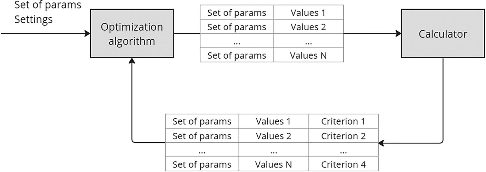
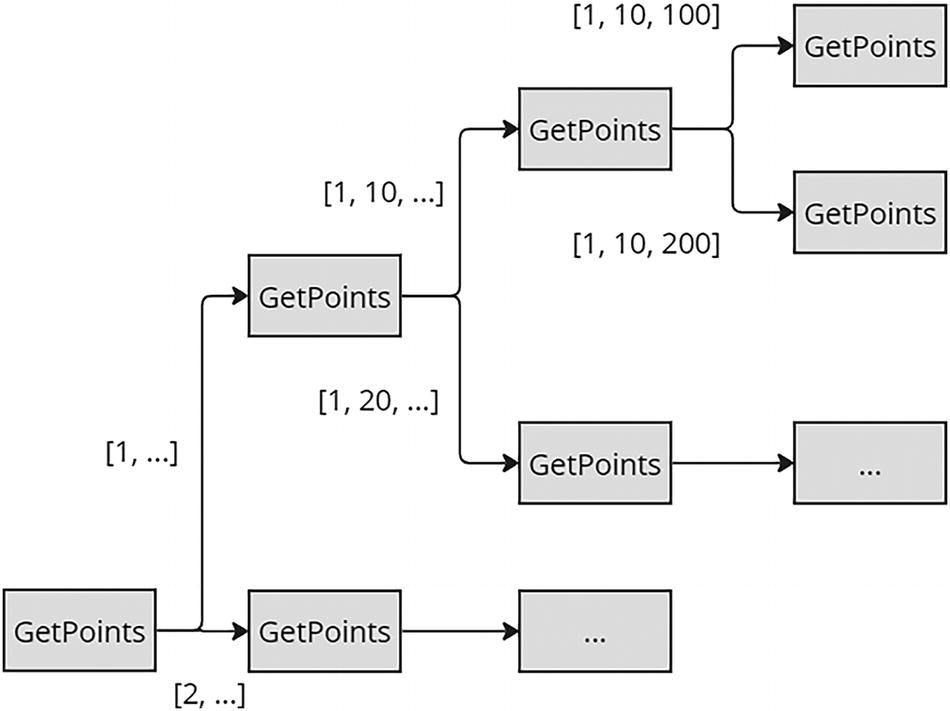
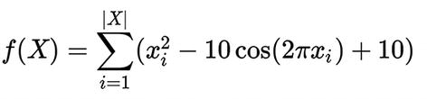

7. Implementation of Optimization Algorithms
© The Author(s), under exclusive license to APress Media, LLC, part of Springer Nature 2024
V. DolzhenkoAlgorithmic Trading Systems and Strategies: A New Approachhttps://doi.org/10.1007/979-8-8688-0357-4_7
7. Implementation of Optimization Algorithms
Viktoria Dolzhenko1
(1)
San Jose, Costa Rica
In the previous chapter, I covered the theory of constructing optimization algorithms. We looked at what genetic algorithms are and from which operators they can be constructed. In this chapter, the time has come to put this information together to create a library that will become one of the important modules of the system for searching for profitable strategies.
As with building any module or service, creating this will consist of several steps.
-
1.
Write a description of use cases. This step is necessary to understand what functionality will be included in the new library and how it will be used.
-
1.
Make a list of the required functionality.
-
1.
Implement it.
In this chapter, I plan to first talk to you about my expectations of the optimization algorithms module and describe my general vision.
After this, we will implement the simplest optimization algorithm, namely, the brute-force algorithm. Since it is simple, when implementing it, most of our effort will be on creating the foundation of the module. Implementing a mechanism that includes new optimization algorithms will not affect library users.
Once the foundation is ready, we will begin implementing the genetic algorithm.
I am using a framework to implement .NET, but that does not mean this chapter will be useful only to those who already know or are interested in .NET. I could have used any other popular language and framework with equal success. The ideas discussed in this chapter will be useful to any person who has decided to create their own trading system, regardless of the chosen programming language.
I hope that after reading this chapter you will have enough information and ideas to create your own library of optimization algorithms.
General View
In the previous chapter, much attention was paid to the fact that optimization algorithms are not a list of clearly defined rules but rather ideas for constructing your own algorithms. If we take the genetic algorithm as an example, many operators have been developed for it, on the basis of which you can implement a large number of your own variations of the genetic algorithm.
And since the list of optimization algorithms is not limited and each of them is unique and has its own list of settings and parameters, this means that the optimization algorithm in the service for finding a profitable strategy will be an entity.
I see the scenario for creating an optimization algorithm as follows:
-
1.
The user opens a special form for creating an optimization algorithm in the UI part of the application.
-
1.
The user possibly enters the name of the new algorithm.
-
1.
The user selects the type. In this chapter, we implement only two types of algorithms: brute-force algorithm and genetic algorithm.
-
1.
The user configures operator types or other options.
-
1.
The user sets the values of free parameters.
-
1.
The user saves the result.
What does the module of optimization algorithms have to do with this? After all, it will not contain a UI or even a database. But pay attention to steps 3, 4, and 5. Where will the application get the list of available algorithm types? What about the types of operators and the list of free parameters for them? All this information will have to be provided by the optimization algorithms module.
Here we have highlighted the first functionality that the module must implement.
Functional requirement: Return all necessary information for creating and configuring variations of optimization algorithms.
Let’s say the user created a new optimization algorithm or changed an existing one. How will he understand that his algorithm is efficient enough? Of course, it makes sense to perform a preliminary check by testing it on some simple subtheory with a small number of optimized parameters and on a not too large period of historical data, but is this enough? In addition, even such testing will take time and may not reveal all the advantages or disadvantages of the new optimization algorithm.
All this leads to the need to create a different way to test the effectiveness of algorithms. And there is such a way. It is based on training algorithms on special mathematical functions. Of course, this method does not give an absolute result. As was correctly noted in the previous chapter, the problem of finding optimal parameter values is completely unformalized. That is, it does not have any mathematical model. This means it is impossible to find a training mathematical function that is remotely similar to this.
But we know that it is multi-extremal and has a range of permissible values, which is a multidimensional parallelepiped. This knowledge allows us to test the performance of the algorithm on multi-extremal mathematical functions with or without the addition of a range of acceptable values.
Functionality requirement: Provide functionality that allows you to test the created algorithm on training mathematical functions.
From the fact that using the module it is possible to optimize not only strategies, but also mathematical functions, another requirement follows.
Functional requirement: The module must be independent of the context in which it is used.
This means that for the algorithms embedded in the module, there should be no difference between the optimization of the candle interval (1 min, 5 min, 1 h, and so on) for calculating the indicator of one of the conditions of the signal to buy the strategy and the value of one of the components of the vector X of the three-dimensional function of Hartman.
So, using the optimization algorithms module, the user was able to create a new algorithm and test its operation on mathematical functions, after which he selected the new algorithm in the settings of the theory generator and clicked the generate button. Next, the theory is generated, and on its basis a subtheory is created, which uses this algorithm to create and test strategies.
Let’s imagine that the user has chosen a brute-force algorithm, and according to the subtheory settings, there are several thousand variants of strategies, each of which needs to be tested. Should the algorithm immediately return several thousand variants of parameter values? Of course not. First, saving and queuing thousands of strategies at once is not a good idea, because something can go wrong in the middle of this process.
Second, there is a possibility that the user may change his mind and stop the calculation. Then it will turn out that a large number of strategies and tasks will be created in vain and will only waste space in the database. This means that it makes sense for the module to provide variations in parameter values in portions.
The iterative nature of most optimization algorithms also speaks in favor of chunkiness. If we take, for example, a genetic algorithm, then it has the concept of generations, which are also generated sequentially.
Functional requirement: Generating sets of values for calculating the objective function (calculating strategy indicators) must be an iterative process.
As a result, the operation of the module can be represented as a loop, as shown in Figure 7-1.

A flow diagram depicts how the set of parameter settings is processed via optimization and a calculator with N number of values. The calculated set of parameters with n number of values and criteria is feedback to the optimization algorithm.
Figure 7-1
Operation of the optimization module
Let’s fix the final list of functionality that is required from the library.
-
1.
Provide all the necessary information to create and configure variations of optimization algorithms.
-
1.
A module must be independent of the context in which it is used.
-
1.
Generating sets of values for calculating the objective function should be an iterative process.
-
1.
Provide functionality that allows you to test the created algorithm on training mathematical functions.
Brute-Force Algorithm
The essence of this method is to enumerate all the possible options for parameter values. Let’s start with the first requirement: provide information about the algorithm settings. First, let’s discuss how the library classes will be used.
I see it this way:
-
1.
The connection will of course be made using IServiceCollection. Dependency injection (DI) facilitates testing by allowing dependencies to be replaced with mock implementations. It also reduces coupling between modules and promotes better separation of responsibilities in code. This is a generally accepted practice that should not be abandoned, even if at first glance it seems that DI is not needed.
-
1.
Of course, enum or its equivalent will be used to store the list of available algorithm types if we need more advanced functionality in the future.
-
1.
All functionality will be embedded in classes that implement the IOptimizationAlgorithm interface. One class will be created for each type of optimization algorithm.
-
1.
To obtain an instance of a class that implements an algorithm, you need to contact the factory, which will match the type of the algorithm with the desired class and generate its instance.
Let’s get started. Listing 7-1 shows an implementation of an extension to IServiceCollection. Here I use functionality that was implemented in the latest version of .NET 8 Keyed Services. The idea is to be able to add a named implementation of an interface. I use one of the enum elements as the key.
public static IServiceCollection AddOptimizationAlgorithms(this IServiceCollection services)
{
services.AddSingleton
services
.AddKeyedTransient
AlgorithmTypes.BruteForce);
return services;
}
Listing 7-1
Adding Dependencies
I connect the factory as a singleton because this class is stateless, so I don’t see the need to generate a new instance every time I get an instance from the collection. But IOptimizationAlgorithm will be Transient, because it will store the necessary settings for calculating the next portion of parameter values.
Listing 7-2 shows the implementation of the function that gets an instance of an algorithm in the AlgorithmFactory class.
public IOptimizationAlgorithm GetOptimizationAlgorithm(
AlgorithmTypes type)
{
return _serviceProvider
.GetRequiredKeyedService
}
Listing 7-2
GetOptimizationAlgorithm Function
Getting Info
Let’s take a look at IOptimizationAlgorithm in Listing 7-3, since the first step was to implement the functionality of obtaining information about the algorithm. Now it contains only one function.
public interface IOptimizationAlgorithm
{
public AlgorithmTypeInfo GetTypeInfo();
}
Listing 7-3
IOptimizationAlgorithm Interface
The brute-force algorithm has only one free parameter: the number of returned sets of values at each iteration. So, the AlgorithmTypeInfo class looks simple (Listing 7-4), but when we start implementing a genetic algorithm, it becomes much more complex.
public record AlgorithmTypeInfo(AlgorithmTypes Type)
{
public List
}
public record AlgorithmTypeInfo_Param(
ParamTypes Type,
decimal DefaultValue);
Listing 7-4
AlgorithmTypeInfo Record
The information generation function for BruteForceAlgorithm will look like that shown in Listing 7-5.
public AlgorithmTypeInfo GetTypeInfo()
{
var info = new AlgorithmTypeInfo(AlgorithmTypes.BruteForce);
info.Params
.Add(new AlgorithmTypeInfo_Param(ParamTypes.PointsCount, 100));
return info;
}
Listing 7-5
GetTypeInfo for Brute-Force Algorithm
I’ve added the PointsCount parameter, so now let’s pass it to the class that implements the algorithm. To do this, I created an AlgorithmInfo class, which is very similar to AlgorithmTypeInfo, but instead of defaultValue, you need to fill in the value field.
You also need to add the Init() function to the IOptimizationAlgorithm interface and call it in the factory. Listing 7-6 shows the modified code in the AlgorithmFactory class. I made both factory methods public. One creates an algorithm for the purpose of calculation, and the other creates the necessary information.
public IOptimizationAlgorithm GetOptimizationAlgorithm(
AlgorithmInfo info,
List
{
IOptimizationAlgorithm optimizationAlgorithm =
GetOptimizationAlgorithm(info.Type);
optimizationAlgorithm.Init(info, functionVariables);
return optimizationAlgorithm;
}
public IOptimizationAlgorithm GetOptimizationAlgorithm(
AlgorithmTypes type)
{
return _serviceProvider
.GetRequiredKeyedService
}
Listing 7-6
GetOptimizationAlgorithm Function
Listing 7-7 demonstrates the implementation of the Init function of the BruteForceAlgorithm class.
public void Init(AlgorithmInfo info, List
{
_pointsCount =
(int)info.Params
.First(p => p.Type == ParamTypes.PointsCount).Value;
_functionVariables = functionVariables;
}
Listing 7-7
Init Function
Let’s take a look at the FunctionVariable type, which is a representation for a function parameter. It is the set of these parameters that the optimization module must optimize. Listing 7-8 shows my implementation of this class.
public record FunctionVariable
{
public IVariableId Id { get; }
public decimal? MinValue { get; }
public decimal? MaxValue { get; }
public decimal? Step { get; }
public List
public FunctionVariable(
IVariableId id,
decimal minValue,
decimal maxValue,
decimal step)
{
Id = id;
MinValue = minValue;
MaxValue = maxValue;
Step = step;
}
public FunctionVariable(IVariableId id, List
{
Id = id;
Values = values;
}
}
Listing 7-8
FunctionVariable Record
First, pay attention to the type of the Id field. Imagine a scenario where an application works with a library. The service for searching for optimal strategies based on subtheory must generate an array of these parameters. Then the library returns sets of these parameters with values. How will the application understand which signal, condition, and indicator this parameter belongs to? It would be possible to make this field as a string in which the application encoded the necessary information, for example, in JSON format. But what if some algorithm needs to sort these identifiers or some other action is needed? It’s just that the string most likely will not be able to provide us with a sufficient level of functionality.
At this point, the IVariableId interface looks pretty simple.
interface IVariableId: IEquatable
I immediately added IEquatable
Please note that I have significantly simplified the range of acceptable values of the objective function, leaving only min, max parameters or a list of values, because this library is created to find profitable strategies, so I believe that I cannot implement more complex scenarios of limiting functions in it. Pay attention to the two constructors; they ensure data integrity. In one case, the list of values will be filled, and in the other, the boundaries of possible values will be filled. This mechanism could be implemented by using inheritance, where one type would implement a variable with restrictions and another with a list of values.
Getting a Set of Values
It’s time to implement a method for getting sets of values. Listing 7-9 shows my implementation of this function.
public IEnumerable
List
{
List
IEnumerable
.Where(allPoint =>
previousResults == null
|| !previousResults.Exists(r => r.Point == allPoint))
.Take(_pointsCount);
return nextPoints;
}
Listing 7-9
GetNextPoints Function
There is nothing complicated about the function itself. Of interest is the AlgorithmPoint class and the comparison operator r.Point == allPoint. Listing 7-10 shows an implementation of this class.
public class AlgorithmPoint
{
public List
public static bool operator ==(AlgorithmPoint? a, AlgorithmPoint? b)
{
if (ReferenceEquals(a, b))
return true;
if(a is null || b is null)
return false;
if(a.Values.Count != b.Values.Count)
return false;
return a.Values
.OrderBy(v => v.Id)
.SequenceEqual(b.Values.OrderBy(v => v.Id));
}
public static bool operator !=(AlgorithmPoint a, AlgorithmPoint b)
{
return !(a == b);
}
}
Listing 7-10
AlgorithmPoint Class
Let’s take a closer look at this code. First, I ask you to pay attention to the fact that it uses the OrderBy function by identifier, which is an implementation of the IVariableId interface. This means the class that implements this interface must also implement IComparable, because the OrderBy implementation calls the CompareTo function.
Let’s return to the GetNextPoints function. It left undisclosed the implementation of the GetPoints function. The purpose of this is to return all possible variations of sets of variable values. The difficulty of this algorithm is that we do not know how many variables the target function contains. I built a solution based on templates.
Imagine that the set of variables has the form in Table 7-1.
Table 7-1
Variables Example
Id
Min
max
step
1
1
2
1
2
10
20
10
3
100
200
100
Then the algorithm will look like this:
-
1.
Take all possible values of variable 1. Obviously, this has only two possible values: 1 and 2. Create a template from these two values. Get an array of two templates.
-
1.
Take the first template [1, ...] and “expand” it to the values of the second variable. Get the patterns: [1, 10, …] and [1, 20, …].
-
1.
Take the pattern [1, 10, ...] and expand it to the values of the third variable. Get possible sets of values: [1, 10, 100] and [1, 10, 200].
-
1.
Repeat steps 2 and 3 until all unfilled templates are exhausted.
The idea of recursion is that steps 2 and 3 are no different from each other; they can be replaced by a function that receives a list of templates as input and then takes an unused variable, “expands” the templates, and calls itself again, and so on until as long as there is an unused variable.
The call tree will look like Figure 7-2.

A branching diagram defines how the get points module is split into two sub-modules with respective weights. The submodules are again split into root modules with respective weights.
Figure 7-2
GetPoints recursion
Listing 7-11 demonstrates my simplest implementation of the GetPoints function.
private List
{
pointTemplate ??= new AlgorithmPoint();
FunctionVariable? remainderVariable = GetRemainderVariable();
if (remainderVariable == null)
return new List
var newTemplates = GetTemplates();
var result = new List
foreach (AlgorithmPoint template in newTemplates)
{
List
result.AddRange(points);
}
return result;
FunctionVariable? GetRemainderVariable()
{
foreach (FunctionVariable functionVariable in _functionVariables)
{
if (!pointTemplate!.Values
.Exists(v => v.Id.Equals(functionVariable.Id)))
return functionVariable;
}
return null;
}
IEnumerable
{
List
var templates = new List
foreach (decimal value in values)
{
AlgorithmPoint newTemplate = new AlgorithmPoint();
newTemplate.Values
.Add(new FunctionVariableValue(remainderVariable.Id, value));
foreach (FunctionVariableValue item in pointTemplate.Values)
{
newTemplate.Values
.Add(new FunctionVariableValue(item.Id, item.Value));
}
templates.Add(newTemplate);
}
return templates;
}
}
Listing 7-11
GetPoints Function
The condition for exiting recursion is the fact that the algorithm no longer finds unused variables, that is, when the remainderVariable variable is equal to null. Of course, this algorithm is far from optimal, but it is easy to understand. You can store hashes of used variables in some variable and not loop through all sets of variables each time. But I tried to implement an algorithm that is understandable to everyone. If your skills and knowledge allow you to optimize it, then that’s great!
How to Use
So, BruteForceAlgorithm has been implemented. Let’s try to connect our library and see if it is convenient to use. Listing 7-12 presents the simplest implementation of the algorithm.
var services = new ServiceCollection();
services.AddOptimizationAlgorithms();
ServiceProvider provider = services.BuildServiceProvider();
AlgorithmFactory algorithmFactory = provider.GetRequiredService
AlgorithmInfo info = new(AlgorithmTypes.BruteForce);
info.Params.Add(new AlgorithmInfo_Param(ParamTypes.PointsCount, 2));
List
functionVariables.Add(new FunctionVariable(new VariableId("First"), 1, 2, 1));
functionVariables.Add(new FunctionVariable(new VariableId("Second"), 10, 20, 10));
functionVariables.Add(new FunctionVariable(new VariableId("Third"), 100, 200, 100));
IOptimizationAlgorithm? algorithm = algorithmFactory.GetOptimizationAlgorithm(info, functionVariables);
List
List
List<(int step, List
int step = 0;
while (points.Any())
{
result.Add((step, points));
step++;
points
.ForEach(p => previousResults.Add(new ObjectiveFunctionResult(p, 1)));
points = algorithm!.GetNextPoints(previousResults).ToList();
}
Listing 7-12
Example of Using the Algorithm
In this code, I created an algorithm that returns sets of values of 2. Also, the target function contains variables as in the example we discussed earlier. As a result, this piece of code will return the following result:
---------------------------------
| Step | First | Second | Third |
---------------------------------
| 0 | 1 | 10 | 100 |
---------------------------------
| 0 | 1 | 10 | 200 |
---------------------------------
| 1 | 1 | 20 | 100 |
---------------------------------
| 1 | 1 | 20 | 200 |
---------------------------------
| 2 | 2 | 10 | 100 |
---------------------------------
| 2 | 2 | 10 | 200 |
---------------------------------
| 3 | 2 | 20 | 100 |
---------------------------------
| 3 | 2 | 20 | 200 |
---------------------------------
Of course, work on the implementation of this algorithm is far from finished, because the library does not have a single test. But I will leave testing this code outside the scope of the book to focus your attention on the main thing.
Genetic Algorithm
It’s time to implement the genetic algorithm. We already have the foundation of the library. Let’s build a new algorithm into this. I will recall its main aspects. This is one of the population algorithms, the idea of which is based on the creation of several independent agents (population), which, according to some logic, migrate across the range of acceptable values in search of the optimal value of the objective function.
The general scheme of any population algorithm is as follows:
-
1.
According to some logic, an initial population or first set of agents is generated.
-
1.
The agent migration process is in progress. If we take the genetic algorithm into consideration, then for it the migration process is presented as a set of operators. During the migration process, a new population or the next set of agents is generated.
-
1.
The search completion conditions are checked. If this is done, then the calculations stop. Otherwise, go to step 2.
The most interesting and difficult part of creating this algorithm is the migration process. As mentioned earlier, for genetic algorithms, it looks like a set of operators.
These are the types of operators:
-
Mutation. The idea of this operator is to use some algorithm to change the values of the agent’s genes and thereby create a new population. That is, the result of this operator is the creation of a new population.
-
Crossover. In this operator, two agents (individuals) are crossed using some algorithm, resulting in the creation of one or more agents. This operator also entails the emergence of a new population.
-
Selection. This operator does not entail the creation of new agents, but it is necessary for selecting pairs for the crossover operator. It turns out that you cannot apply the crossover operator until you use the selection operator.
-
Filtering. This operator is necessary for selecting the fittest individuals. It does not entail the creation of a new population but filters the old one so that poorly adapted individuals do not participate in other operators in the future.
Steps
In a general sense, a genetic algorithm is not some kind of strict set of rules but rather a set of instructions with which you can construct as many of your own variations of optimization algorithms as you want. It was this knowledge that prompted me to create the concept of the step. Each step will have its own type, order, and set of parameters, as well as a list of child steps. I have identified four types of steps for myself.
-
1.
Initialization. At this stage, the first population is created.
-
1.
Mutation. In this step, a mutation operator is applied to the current population.
-
1.
Filtering. At this step, a filtering operator is applied to the current population.
-
1.
Breeding. This step contains two steps: Selection Step and Crossing Step. I found it inappropriate to separate these two steps into two different units because you can’t cross without first selecting.
The idea is that you can construct your own algorithms using and combining steps 2, 3, and 4 in any number and in any order. For example, thanks to this architecture, you can create an algorithm like this:
-
1.
Initialization. An initial population is created using the flat operator. That is, agents are created uniformly over the entire range of acceptable values.
-
1.
Mutation. The mutation is performed using the random operator.
-
1.
Breeding. Using the panmixia method for selection, we produce the crossovering fuzzy operator.
-
1.
Filtering. We filter the current population using the elitism-based method.
-
1.
Mutation. This happens using the gauss operator.
-
1.
And so on. This list can go on forever.
In this book I will show the simplest implementation of this algorithm, so I will implement the simplest condition for ending the search: by the number of iterations. It turns out that the algorithm itself will have only one parameter equal to the number of generations.
Getting Info
Let’s start the implementation with the GetTypeInfo method. Obviously, the genetic algorithm class itself should not know anything about what parameters are needed for each of the steps.
This means that these are the steps:
-
1.
The GetTypeInfo method of the GeneticAlgorithm class will call the GetTypeInfo method of all available step types.
-
1.
You need to create an IAlgorithmStep interface with the GetTypeInfo function. It turns out that each step will be a class that implements this interface.
-
1.
Since each step will have its own parameters, it is necessary to implement a factory that will help create a step of each type.
Since the concept of steps and their sequences appeared, it is necessary to change the AlgorithmInfo and AlgorithmTypeInfo types.
Listing 7-13 presents a new implementation of the AlgorithmTypeInfo type. In this case, I added the AllowedSteps field, because now each algorithm can contain steps.
public record AlgorithmTypeInfo(AlgorithmTypes Type)
{
public List
public List
}
Listing 7-13
AlgorithmTypeInfo Record
Listing 7-14 shows an implementation of the AlgorithmTypeInfo_AllowedStep type. Note that the constructor has an Index parameter. The point is that we need to somehow indicate that a certain step is mandatory and also indicate its sequence number in advance. This concerns the initialization phase. This is mandatory and should always come first. I didn’t create a separate type for the step parameters because I think the AlgorithmTypeInfo_Param type I created earlier is perfect for this task.
public record AlgorithmTypeInfo_AllowedStep(StepTypes Type, int? Index)
{
public List
public List
public List
}
Listing 7-14
AlgorithmTypeInfo_AllowedStep Record
The AlgorithmTypeInfo_Operator class, shown in Listing 7-15, includes only a set of parameters and a type.
public record AlgorithmTypeInfo_Operator(OperatorTypes Type)
{
public List
}
Listing 7-15
AlgorithmTypeInfo_Operator Record
Listing 7-16 demonstrates the IAlgorithmStep interface. For now there is only one function in this, but as the functionality expands, this will also grow.
public interface IAlgorithmStep
{
public AlgorithmTypeInfo_AllowedStep GetInfo();
}
Listing 7-16
IAlgorithmStep Interface
Since we have a new set of classes, we somehow need to add them to the collection and create a factory for them. I don’t want the central part of the library to know anything about the steps and their presence in the algorithm, so I created my own implementation of the extension for IServiceCollection for each algorithm. Listing 7-17 presents a new implementation of the AddOptimizationAlgorithms function. As you can see, now work with IServiceCollection is hidden in each of the algorithms, which is very convenient.
public static IServiceCollection AddOptimizationAlgorithms(this IServiceCollection services)
{
services.AddSingleton
services.AddBruteForceAlgorithm();
services.AddGeneticAlgorithm();
return services;
}
Listing 7-17
Adding Dependencies
Listing 7-18 shows an implementation of the AddGeneticAlgorithm method. In it I add the GeneticAlgorithm class, a factory for creating steps and all the step classes.
public static IServiceCollection AddGeneticAlgorithm(this IServiceCollection services)
{
services
.AddKeyedTransient
AlgorithmTypes.Genetic);
services.AddSingleton
services
.AddKeyedTransient
StepTypes.Breeding);
services
.AddKeyedTransient
StepTypes.Filtering);
services
.AddKeyedTransient
StepTypes.Initialization);
services
.AddKeyedTransient
StepTypes.Mutation);
return services;
}
Listing 7-18
AddGeneticAlgorithm Dependencies
Now that we have the steps already added to the IServiceCollection, it’s time to implement the GetTypeInfo method in the GeneticAlgorithm. Listing 7-19 shows my implementation. I added one parameter that controls the number of generations. Please note that this is the number of generations, not populations. I did this on purpose because many steps, such as mutation, will generate a population. I call a generation the complete passage of the algorithm through all steps. The interesting thing about this code is how I implemented obtaining information for all steps. I took all the classes that implement the IAlgorithmStep interface and one by one called their methods for obtaining information.
public AlgorithmTypeInfo GetTypeInfo()
{
var info = new AlgorithmTypeInfo(AlgorithmTypes.Genetic);
info.Params.Add(
new AlgorithmTypeInfo_Param(ParamTypes.GenerationsCount, 10));
IEnumerable
_stepFactory.GetAll();
foreach (IAlgorithmStep step in steps)
info.AllowedSteps.Add(step.GetInfo());
return info;
}
Listing 7-19
GetTypeInfo Method
Let’s dive into the implementation of the GetInfo functions of each of the steps. Obviously, to obtain complete information about the step, it is necessary to obtain information for each of the implemented operators. This means that another IOperator interface is needed. Moreover, each step will have its own, because the purpose and functionality of each of them differs.
Let’s start with InitializationStep. For this step I implemented two statements: FlatOperator and FlatManagedOperator.
The idea of FlatOperator is to uniformly distribute a predetermined number of initial individuals over the range of acceptable values.
FlatManagedOperator is very similar to FlatOperator, but it does not specify the size of the initial population but rather a percentage of the maximum possible number of individuals.
I won't bore you with showing the implementation of the InitializationStepCollectionExtensions and OperatorFactory classes, because their code is very similar to the code implemented earlier.
Listing 7-20 shows my implementation of the GetInfo method of the InitializationStep class. The only interesting thing about this code is that I immediately define the order for this step. This means this step should always come first and cannot be skipped.
public AlgorithmTypeInfo_AllowedStep GetInfo()
{
AlgorithmTypeInfo_AllowedStep info = new(StepTypes.Initialization, 0);
IEnumerable
foreach (IOperator @operator in operators)
info.AllowedOperators.Add(@operator.GetInfo());
return info;
}
Listing 7-20
Get Step Function
Next, in each of the statements, I implemented the GetInfo method approximately, as shown in Listing 7-21.
public AlgorithmTypeInfo_Operator GetInfo()
{
var @operator = new AlgorithmTypeInfo_Operator(OperatorTypes.Flat);
@operator.Params.Add(
new AlgorithmTypeInfo_Param(ParamTypes.PopulationSize, 10));
return @operator;
}
Listing 7-21
Get Operator Info Function
I think we can stop here. I hope the information I gave you will be enough to implement the GetInfo method for the remaining steps and their operators.
Getting a Set of Values
Let’s move on to the central function of this algorithm, namely, the GetNextPoints function. First, let’s decide on the sequence of actions.
Let’s imagine that a user has designed the following genetic algorithm:
-
Initialization
-
Mutation
-
Filtering
-
Breeding
-
Filtering
The stopping condition will be the creation of GenerationsCount generations.
So, the application calls the GetNextPoints method of our algorithm in a loop, gets a new list of sets of values to calculate, calculates the objective function values for each of them, and calls the GetNextPoints method again. This continues until GetNextPoints returns an empty list of value sets.
Obviously, to count the number of generations, the optimization algorithm needs to know what generation and step it is at the next time GetNextPoints is called. It would be logical to store this counter in the very instance of the class that implements the optimization algorithm. But you can’t do this, because in reality several instances of the application will be raised, one for each pod. And if so, then there will be several instances of classes.
We cannot guarantee that GetNextPoints will be called by only one specific instance of the class. Also, do not forget that the pod can cease to exist at any time and then the application will lose information about the current generation and step, which is unacceptable. There are two options left: store information about the current generation somewhere in external storage, such as Redis or PostgreSQL, or entrust this task to the calling application.
I really don’t like both options; in the first one our library forces the application to use a certain kind of storage, and in the second one we expose some implementation details of the library.
I chose the second option. That is, I entrusted the storage of information to the calling application. But at the same time, I tried to make this information as impersonal as possible in order not to disclose implementation details and to allow other algorithms to use this field.
Listing 7-22 demonstrates how I changed the GetNextPoints function of the IOptimizationAlgorithm interface.
(List
GetNextPoints(
List
string? magicString = null);
Listing 7-22
GetNextPoints Function
As you can see, I added the magicString parameter. Great name, isn’t it? This is returned every time the GetNextPoints method is called. The calling application must save it and then pass it back as a parameter the next time the function is called.
Listing 7-23 demonstrates my implementation of the MagicData class for a genetic algorithm. It shows that magicString is a JSON string into which the class instance is parsed.
public class MagicData
{
public int GenerationNumber { get; set; }
public int StepIndex { get; set; }
public MagicData(string? jsonString = null)
{
if (jsonString != null)
{
MagicData? obj = JsonSerializer
.Deserialize
if (obj == null)
throw new ArgumentException(nameof(jsonString));
GenerationNumber = obj.GenerationNumber;
StepIndex = obj.StepIndex;
}
}
public MagicData(){}
public override string ToString()
{
return JsonSerializer.Serialize(this);
}
}
Listing 7-23
MagicData Class
Let’s go through all the steps:
-
1.
The first call to GetNextPoints occurs. previousResults = null, magicString = null. We deserialize magicString and get GenerationNumber=0, StepIndex=0.
-
1.
We get an instance of the Initialization class of the step, because StepIndex = 0.
-
1.
We turn to the method for obtaining a list of sets of values of this step and obtain the following points or the current population.
-
1.
We get the identifier of the next step, write GenerationNumber=0, StepIndex=1 in magicData and return all the information to the calling method.
-
1.
GetNextPoints is called. We were returned a certain set of previousResults and GenerationNumber=0, StepIndex=1.
-
1.
We get an instance of the step Mutation class, because StepIndex = 1. To get the next population, you need to pass the current population to the mutation step method so that it can mutate all agents using the selected operator.
When this is the first generation, it is easy to get the current population, but imagine that this is not the first generation. How do you select only the necessary instances from previousResults?
It is for this purpose that I added the Id field to the ObjectiveFunctionResult class. And in the MagicData class is the PopulationIds field, which contains a list of solution identifiers. An application that will use a library of optimization algorithms will be able to provide this identifier, because in essence ObjectiveFunctionResult is a mapping of the Task entity, which of course has an identifier.
Let’s continue:
-
1.
The Mutation step returned a list of new sets of values to calculate, which we passed to the calling function.
But what’s important is that this set of values is not a new generation. The new generation consists of the population obtained in the previous step plus the list of sets obtained in the Mutation step. It is also necessary to take into account that the mutation step can create a new generation by joining mutated individuals to the previous generation, or it can do this by replacing parents. It turns out that each step must implement two functions: one to get a list of parameter sets and the second to get a new population. The first entails transferring control to the calling function so that it can calculate the objective function for new agents, and the second generates a new population.
There is another fact that speaks in favor of creating two functions. This is the presence of such a step as Filtering. At this step, new agents are not formed, but a part of the current population is eliminated, and this is how this step forms a new population.
Let’s say the Mutation step now has two functions. One of them generates a new list of parameter sets, and the second generates a new population. It seems reasonable to first call the function to get new individuals and then get a new population. But this order is not convenient, because after receiving a list of new individuals, it is necessary to transfer control to the calling function, which means there can be no talk of a subsequent call to the function for obtaining a new population.
Before we continue, I would like to draw your attention to one more point. I mentioned that the Mutation step can have the option of replacing parents with children, which means that each set of values must have its own MagicData. Therefore, I added a field of type string MagicData to the AlgorithmPoint class. And I created the PointMagicData class for this.
Since the logic of the algorithm has changed, it’s probably worth starting to describe the steps again.
-
1.
The first call to GetNextPoints occurs. previousResults = null, magicString = null. We deserialize magicString and get GenerationNumber=0, StepIndex=0. Based on this data, we obtain the current population currentPopulation and the results of calculations obtained from the previous list of new individuals currentPreviousResults. Of course, both of these lists are empty because we called the function for the first time.
-
1.
We start the loop with the condition that the list of new individuals that need to be returned to the calling function—nextPoints—is empty. On each pass of this loop, the algorithm will call the functions of the next step. Not all steps generate new individuals.
-
1.
In this loop, we get an instance of the current, zero step and call this GetNextPopulation method. This method does not spawn new individuals, so for the Initialization step, it will always return the list passed to it.
-
1.
Next we get the next step. In this logic, we will have to make an exception for the Initialization step, because we cannot get the next step but need to stop at the current one.
-
1.
We call the GetNextPoints method of the current Initialization step, which, of course, will return new individuals that the function will pass to the calling function.
-
1.
And so on.
Listing 7-24 shows my implementation of the first step of the GetNextPoints method. This code fragment initializes three important variables: currentMagicData, currentPopulation, and currentPreviousResults, which will be needed in the loop from step 2.
public (List
List
string? magicString = null)
{
previousResults ??= new();
MagicData currentMagicData = new MagicData(magicString);
List
GetCurrentPopulation(currentMagicData, previousResults);
List
GetCurrentPreviousResults(currentMagicData, previousResults);
...
Listing 7-24
Start of GetNextPoints Function
Listing 7-25 shows a code snippet that implements the loop from step 2.
List
var nextMagicData = new MagicData();
while (nextPoints == null || !nextPoints.Any())
{
AlgorithmInfo_Step currentStepInfo = _info.Steps
.First(s => s.Index == currentMagicData.StepIndex);
IAlgorithmStep currentStep = _stepFactory
.GetStep(currentStepInfo, _functionVariables);
currentPopulation = currentStep
.GetNextPopulation(currentPopulation, currentPreviousResults);
nextMagicData.PopulationIds = currentPopulation
.ConvertAll(i => i.Id);
AlgorithmInfo_Step? nextStepInfo = GetNextStep(currentMagicData, currentPopulation);
bool stoppingConditionFulfilled =
CheckStoppingCondition(nextStepInfo, currentMagicData, currentStepInfo);
if (stoppingConditionFulfilled)
return null;
nextMagicData.GenerationNumber = currentMagicData.GenerationNumber;
nextMagicData.StepIndex = nextStepInfo.Index;
if (nextStepInfo!.Index <= currentStepInfo.Index && currentPopulation.Any())
nextMagicData.GenerationNumber++;
IAlgorithmStep nextStep = _stepFactory.GetStep(nextStepInfo, _functionVariables);
nextPoints = nextStep
.GetNextPoints(
currentPopulation,
new PointMagicData(
nextMagicData.GenerationNumber,
nextMagicData.StepIndex));
currentMagicData = nextMagicData;
}
Listing 7-25
Second Part of GetNextPoints Function
In this piece of code, I do the following:
-
1.
I get information about the current step, currentStepInfo. It is necessary to obtain an instance of the class that implements the step.
-
1.
Using the factory, I get an instance of the currentStep step class.
-
1.
I call the GetNextPopulation method of the current step and save the result to the currentPopulation variable.
-
1.
Since we now know the identifiers of individuals in the current population, we need to write them into our magicData.
-
1.
I receive information about the next step. In Listing 7-26, I provided my implementation of the GetNextStep method.
-
1.
Based on the new step index, we can conclude whether this is the next generation or not. This means we can check the condition for completing the calculations. If the condition has not yet occurred, then we continue the calculations.
-
1.
If the index of the new step is less than the index of the current one, this means that the algorithm has gone through all the steps and will now begin to generate a new generation. This means you can increase the generation number in the nextMagicData variable.
-
1.
The GetNextPoints method of the new step is called. If it returns new individuals, then control is transferred to the calling function.
private AlgorithmInfo_Step GetNextStep(
MagicData currentMagicData,
List
{
if (!previousResults.Any())
return _info.Steps.Single(s => s.Index == 0);
AlgorithmInfo_Step? nextStep =
_info.Steps
.Where(s => s.Index > currentMagicData.StepIndex)
.MinBy(s => s.Index);
if (nextStep == null)
nextStep = _info.Steps
.Where(s => s.Index > 0)
.MinBy(s => s.Index);
return nextStep!;
}
Listing 7-26
Implementation of a Method to Get the Next Step
Initialization Step
Let’s implement our first step, namely, the Initialization Step. Let me remind you that I plan to implement two operators in this, FlatOperator and FlatManagedOperator.
Listing 7-27 demonstrates the implementation of the Init function. There is nothing special about this, except that an instance of the operator class is immediately obtained.
public void Init(
AlgorithmInfo_Step step,
List
{
_step = step;
_functionVariables = functionVariables;
_operator = _operatorFactory.GetOperator(_step.Operator);
}
Listing 7-27
Init Function
The GetNextPopulation function, as I said earlier, returns the previousResults sent. Listing 7-28 shows a simple implementation of the GetNextPoints method. This is where the Generate operator function is called.
public List
List
PointMagicData? magicData = null)
{
return _operator.Generate(_functionVariables, magicData);
}
Listing 7-28
GetNextPoints Function
Let’s start implementing the operators. Let me remind you what their logic is.
The idea of FlatOperator is to uniformly distribute a predetermined number of initial individuals over the range of acceptable values.
FlatManagedOperator is very similar to FlatOperator, but it does not specify the size of the initial population but rather a percentage of the maximum possible number of individuals. It turns out that in both operators the same function is called to generate individuals; the difference is only in the desired number of new individuals.
Listing 7-29 shows the implementation of the Generate method for FlatOperator. As you can see, there is practically no logic in this.
public List
List
PointMagicData? magicData)
{
return PointsFactory.Flat(functionVariables, magicData, _populationSize);
}
Listing 7-29
Generate Points Function
It gets more interesting when we turn to the implementation of the same method, but for the FlatManagedOperator in Listing 7-30. In fact, I call the same PointsFactory.Flat function, but with a pre-calculated number of required individuals.
public List
List
PointMagicData? magicData)
{
int populationSize = GetPopulationSize(functionVariables);
return PointsFactory.Flat(functionVariables, magicData, populationSize);
}
private int GetPopulationSize(List
{
long variablesCount = 1;
foreach (var variable in functionVariables)
{
List
variablesCount *= values.Count;
}
long populationSizeLong = (long)(_coveredPercent / 100 * variablesCount);
int populationSize = (int)Math.Min(populationSizeLong, _maxPopulationSize);
populationSize = Math.Max(populationSize, _minPopulationSize);
return populationSize;
}
Listing 7-30
Generate Points for FlatManagedOperator
I showed you the basic idea of implementing this step. I also laid down a fairly simple architecture for the solution, in which to add a new operator. It is enough to add only one class that implements the IOperator interface.
Mutation Step
I will show the implementation of this step using the random operator as an example. The essence of this method is to replace a certain number of parent genes with random values located in the range of acceptable values.
Listing 7-31 shows an implementation of the method for obtaining a population. It contains a simple logic of combining the previous population with all the mutated individuals. This means that at this step the number of individuals always doubles.
public List
GetNextPopulation(List
List
{
List
nextPopulation.AddRange(previousPopulation);
nextPopulation.AddRange(previousResults);
return nextPopulation;
}
Listing 7-31
GetNextPopulation for Mutation Step
The GetNextPoints method presented in Listing 7-32 is also quite simple. In this cycle, all parents undergo a mutation procedure.
public List
List
PointMagicData? magicData = null)
{
var points = new List
if (population == null)
return points;
foreach (ObjectiveFunctionResult parent in population)
{
AlgorithmPoint mutant = Mutate(parent);
if (magicData != null)
mutant.MagicData = magicData.ToString();
points.Add(mutant);
}
return points;
}
Listing 7-32
GetNextPoints Function
Listing 7-33 shows an implementation of this procedure.
It implements the following algorithm:
-
1.
We take all the variables that can contain more than one value and put them in the changeableVariables variable.
-
1.
After this, we randomly select the required number of genes for the mutation procedure.
-
1.
Call the Mutation function of the selected operator and replace the parent gene with the resulting value.
private AlgorithmPoint Mutate(ObjectiveFunctionResult parent)
{
var mutant = new AlgorithmPoint();
List
foreach (FunctionVariable functionVariable in _functionVariables)
{
List
if (variations.Count>1)
changeableVariables.Add(functionVariable.Id);
}
var random = new Random();
List
random.GetList(changeableVariables, _mutationCount);
foreach (var parentVariableValue in parent.Point.Values)
{
if (variablesForMutation.Contains(parentVariableValue.Id))
{
FunctionVariable functionVariable =
_functionVariables.First(v => v.Id.Equals(parentVariableValue.Id));
decimal parentValue = parentVariableValue.Value;
decimal mutationValue = _operator.Mutation(functionVariable, parentValue);
mutant.Values.Add(new FunctionVariableValue(parentVariableValue.Id, mutationValue));
}
else
mutant.Values.Add(parentVariableValue);
}
return mutant;
}
Listing 7-33
Mutate Function
Filtering Step
Let’s start implementing the filtering step. As a result of this step, new individuals are not created, but a new population is created by selecting more fit individuals. It follows that the GetNextPoints function of the class that implements this step will return null.
The GetNextPopulation function is very simple. Its implementation is presented in Listing 7-34. This calls the selected operator and returns the population that it generated.
public List
List
List
{
return _operator.GetNextPopulation(previousPopulation);
}
Listing 7-34
GetNextPopulation for Filtering Step
I have implemented two operators for this step.
Roulette Operator
We discussed this method in detail in the previous chapter. I will just remind you of the basic principle. The essence of the method is to present individuals in the form of a roulette wheel, which is divided into sectors. Each sector is assigned to a specific individual. The size of the sector depends on the fitness level of the individual.
The selection algorithm looks like this:
-
1.
For each individual, the probability of its selection is calculated. To do this, take the value of its objective function and divide it by the sum of the values of all individuals in the population.
-
1.
We divide the interval from 0 to 1 into subintervals proportional to the values from step 1.
-
1.
We generate a random number from 0 to 1. Depending on which interval it falls in, that individual will be selected.
-
1.
Repeat step 3 as many times as required.
It follows from the algorithm that this operator has only one free parameter: the required population size.
Listing 7-35 shows an implementation of the RouletteOperator’s GetNextPopulation method. It does not yet have the basic logic of the roulette method. I moved this to another class because the roulette method will be used in other operators. Please note that a list of individuals with the weight of each of them is passed to the Roulette.Selection method.
public List
List
{
List<(ObjectiveFunctionResult Entity, double ProbabilityWeight)> listForRoulette =
previousPopulation.ConvertAll(i => (i, (double)i.Value));
List
Roulette.Selection(listForRoulette, _populationSize);
return nextIndividuals;
}
Listing 7-35
GetNextPopulation Function
Listing 7-36 shows an implementation of the Roulette.Selection method. This involves initializing the list of roulette sectors by calling the GetProbabilityElements function. Next, the NextDouble function of the Random class is called, which returns a random number from 0 to 1. After this, the sector in which this number falls is selected and places the selected individual in the resulting list. Please note that this method does not check whether the individual has already entered the new population. As mentioned earlier, it is normal when, as a result of the roulette method, some individuals enter a new population several times.
public static List
List<(T Entity, double ProbabilityWeight)> list,
int size,
Random? rand = null)
{
var result = new List
List
GetProbabilityElements(list);
var random = rand ?? new Random();
for (int i = 0; i < size; i++)
{
double u = random.NextDouble();
ProbabilityElement
probabilityElements
.First(e => u > e.MinInterval && u <= e.MaxInterval);
result.Add(nextPoint.ListElement.Entity);
}
return result;
}
Listing 7-36
Selection Function
Elitism Operator
This method was developed to ensure that the best individuals are guaranteed to be included in the new population. It consists of two steps. At the first stage, the best individuals are selected. They are placed on the list of individuals of the new population. The second completely copies the roulette method. That is, the missing number of individuals is added to the new population using the roulette method.
Based on this logic, this operator has two parameters: the percentage of individuals out of the total number that are considered elite and the required size of the new population.
Listing 7-37 shows an implementation of the GetNextPopulation method.
public List
List
{
var individuals = new List
int eliteCount = (int)(_elitePercent / 100 * previousPopulation.Count);
individuals.AddRange(
previousPopulation
.OrderByDescending(i => i.Value).ToList()
.GetRange(0, elitCount-1));
int remainder = _populationSize - individuals.Count;
List<(ObjectiveFunctionResult Entity, double ProbabilityWeight)> listForRoulette =
previousPopulation.ConvertAll(i => (i, (double)i.Value));
List
individuals.AddRange(rouletteIndividuals);
return rouletteIndividuals;
}
Listing 7-37
GetNextPopulation Function
In Listing 7-37 I first calculate the size of the elite and put that value into the eliteCount variable. After that, I sort the previous population in descending order of the value of the objective function and take the top elements in the resulting eliteCount list. After this, I call the roulette method Roulette.Selection that we previously implemented.
Breeding Step
The purpose of the breeding step is to create new individuals by crossing individuals of the parents. The algorithm for this step is quite simple. First, we select pairs for crossing using some algorithm. Second, we cross them using one of the previously described operators.
Listing 7-38 shows an implementation of the GetNextPoints method. In this function, I first check that the current population consists of at least two individuals; otherwise, further steps are meaningless. Then, I call the GetParentsList function configured by the selection step and save the resulting pairs of parents into the parentsList variable. After this, I perform the crossing by calling the Crossing function for each group of parents.
public List
List
PointMagicData? magicData = null)
{
var nextGeneration = new List
if (population != null && population.Count < 2)
return nextGeneration;
List
_selectionStep.GetParentsList(population, _groupsCount);
foreach (List
{
List
.Crossing(parents, _functionVariables);
if (magicData != null)
{
string magicDataString = magicData.ToString();
children.ForEach(c => c.MagicData = magicDataString);
}
nextGeneration.AddRange(children);
}
return nextGeneration;
}
Listing 7-38
GetNextPoints Function for Breeding Step
The GetNextPopulation function, shown in Listing 7-39, creates a new population based on a previous, or parent, population and a set of descendant individuals. In this step I added the ReplaceWorst parameter. If this flag has a positive value, then the descendant individuals will completely replace the worst parent individuals. Otherwise, the new population will consist of both offspring and parent individuals. If we look in the long term, then thanks to this logic, offspring individuals will compete not only with individuals of their generation but also with all parent individuals. Of course, this is impossible to find in the real world, because there are no immortal living beings.
public List
List
List
{
if (previousPopulation.Count == 1)
return previousPopulation;
var individuals = new List
if (_replaceWorst)
{
int needParentsCount =
previousPopulation.Count>previousResults.Count
? previousPopulation.Count - previousResults.Count
: 0;
var needParents = previousPopulation
.OrderByDescending(p => p.Value).Take(needParentsCount);
individuals.AddRange(needParents);
individuals.AddRange(previousResults);
}
else
{
individuals.AddRange(previousPopulation);
individuals.AddRange(previousResults);
}
individuals = individuals.GroupBy(i => i.Id)
.Select(g => g.First()).ToList();
return individuals;
}
Listing 7-39
GetNextPopulation Function
Selection Step
The purpose of this step is to create a set of parent groups for crossing. The GetParentsList function of the class that implements this step has no logic. It calls the function of the same name of the selected operator.
Selection Operator
The idea of this operator is that only those individuals whose fitness is higher than or equal to the average fitness of the current population are included in the list of parents. Next, pairs are selected using the roulette method, where all elite individuals have an equal probability of being selected into a pair.
Listing 7-40 shows an implementation of this operator.
public List
{
var parentsList = new List
var elite = new List
int eliteCount = _elitPercent / 100 * individuals.Count;
elite.AddRange(individuals.OrderByDescending(i => i.Value).ToList()
.GetRange(0, eliteCount-1));
List<(ObjectiveFunctionResult Entity, double ProbabilityWeight)> listForRoulette =
elite.ConvertAll(i => (i, (double)i.Value));
for (int i = 0; i < groupsCount; i++)
{
List
Roulette.SelectionDistinct(listForRoulette, 2);
parentsList.Add(parentsGroup);
}
return parentsList;
}
Listing 7-40
GetParentsList Function
Panmixia Operator
This is perhaps the simplest selection operator. The idea of this operator is to randomly select parental individuals with equal probability. Listing 7-41 shows its implementation.
public List
{
var parentsList = new List
for (int i = 0; i < groupsCount; i++)
{
List
parentsList.Add(parentsGroup);
}
return parentsList;
}
Listing 7-41
GetParentsList Function
Crossing Step
The purpose of this step is to create offspring individuals based on the groups of parent individuals formed in the previous step. As in the case of the selection step, the Crossing function of the class that implements this step does not have logic. It calls the function of the same name of the selected operator.
Let’s look at the flat operator implementation of this step. The idea is that the gene of a descendant is a random number located between the minimum and maximum values of the parents' genes.
Listing 7-42 shows an implementation of the Crossing function. Please note that to determine the interval within which the gene value of the descendant will be located, I select the best and worst individual from the group of parent individuals. This operation is actually meaningless for this operator, but it makes a lot of sense for other operators I have implemented, such as the heuristic operator, where the value of the child gene should be located closer to the best value of the parent gene.
public List
{
var nextGeneration = new List
ObjectiveFunctionResult parent1 = parents[0];
ObjectiveFunctionResult parent2 = parents[1];
var point = new AlgorithmPoint();
nextGeneration.Add(point);
foreach (FunctionVariableValue value1 in parent1.Point.Values)
{
FunctionVariableValue value2 = parent2.Point.Values.First(v => v.Id.Equals(value1.Id));
FunctionVariable functionVariable = functionVariables.First(v => v.Id.Equals(value1.Id));
decimal best = parent1.Value > parent2.Value ? value1.Value : value2.Value;
decimal worst = parent1.Value < parent2.Value ? value1.Value : value2.Value;
decimal crossValue = Crossing(best, worst, functionVariable);
point.Values.Add(new FunctionVariableValue(value1.Id, crossValue));
}
return nextGeneration;
}
Listing 7-42
Crossing Function
Listing 7-43 demonstrates the implementation of the Crossing function, but for a gene. And again in this code the already implemented Roulette class comes to our aid.
private decimal Crossing(decimal best, decimal worst, FunctionVariable functionVariable)
{
decimal crossValue = best;
if (best != worst)
{
decimal minValue = Math.Min(best, worst);
decimal maxValue = Math.Max(best, worst);
List
functionVariable.GetValues()
.Where(v => v >= minValue && v <= maxValue).ToList();
crossValue = Roulette.Selection(accessValues);
}
return crossValue;
}
Listing 7-43
Crossing Variable
Test Functions
One of the requirements for the module was the requirement for the implementation of mathematical functions, thanks to which you can check the performance of the created algorithm. One of the requirements for such a function is the need for a large number of local extrema. One of the most common functions that satisfies this condition is the Rastrigin function. This is exactly what I was one of the first to implement.
The formula for this is as follows:

F of X = summation limit from i = 1 to the modulus of X of x subscript i squared minus 10 times cosine left parenthesis 2 pi x subscript i right parenthesis plus 10.
Obviously, the minimum and, accordingly, optimal solution to this function will be 0, with the value of all variables equal to 0.
I want to draw your attention to the fact that although the optimization problem often sounds like minimizing the value of the objective function, our task in finding the most profitable strategy is a maximization problem. This shouldn’t bother you. If you multiply the value of the objective function by -1, then the maximization problem becomes a minimization problem.
Listing 7-44 shows an implementation of the Rastrigin function.
public static decimal Calculate(
List
AlgorithmPoint point)
{
double result = 0;
foreach (FunctionVariable variable in functionVariables)
{
double x = (double)point.Values.First(v => v.Id == variable.Id).Value;
result += x * x - 10 * Math.Cos(2 * Math.PI * x) + 10;
}
return (decimal)result;
}
Listing 7-44
Test Calculate Function
SubTheory Example
The optimization algorithms module has been implemented. Let’s look at the use case for this in more detail. Let’s imagine that we have a SubTheory with the following parameters:
Signal to open a position:
-
Group AND:
-
Volume < Const
-
Bbw < Const
-
Lp < BbwL
Signal to close a position:
-
Group AND:
-
Hp > BbwU
Risk control will be presented in the form of a stop-loss order.
Volume is the trading volume of the candle. The candle itself can be obtained thanks to three parameters.
-
CandleIntervalId: Candle interval identifier (1min, 2min, and so on)
-
CandleFrom: Parameter that determines how many candles back you need to move away from the current one
-
CandleTo: Parameter that determines how many candles back you need to move away from CandleFrom
Thanks to these parameters, you can get a set of candles for which the Volume indicator is calculated. The search for candles for all other indicators that require this occurs in a similar way. If the condition involves two indicators that require information about the candle, then for condition = true, the condition must be met for all candles in the left and right parts.
Const is a constant or a specific number that does not depend on trading data. For this there is only one parameter, which is volume, that is, the value of the constant itself.
Bbw (bollinger bands width) is the indicator with two parameters: lookbackPeriods and standardDeviations. This indicator also contains three parameters to determine the candle on which this will be calculated.
Lp is the low price of the selected candle. It has no specific parameters other than the three (CandleIntervalId, CandleFrom, and CandleTo) described earlier.
BbwL (bollinger bands lower band) is an indicator with two parameters: lookbackPeriods and standardDeviations. This indicator also contains three parameters to determine the candle on which this will be calculated.
HP is high price. It has no specific parameters other than the parameters necessary to define a candle.
BbwU (bollinger bands upper band) is an indicator with two parameters: lookbackPeriods and standardDeviations. This indicator also contains three parameters to determine the candle on which this will be calculated.
Stop-loss order has only one parameter: protected coefficient. Using this, you can calculate the limit price. If the current price of a financial asset is above this level, the position is closed.
I would like to draw your attention to the way I decided to set the parameters for the CandleFrom and CandleTo variables. If you use standard from, to, and step, then there is a high probability of intersection of values, as well as invalid data, such as when CandleFrom = 5 and CandleTo = 1. To avoid this, I decided to vary the CandleFrom and CandleInterval parameters. Then CandleTo is easy to define: CandleTo = CandleFrom + CandleInterval.
If we take all the signal parameters, we get a list of variables for the optimization algorithm, as shown in Table 7-2. As you can see, the transition from SubTheory parameters to optimization algorithm variables is quite easy to implement.
Table 7-2
Open Position Signal Params
Object
Name
Param
From
To
Step
Open signal
Volume
CandleIntervalId
1min, 5min, 10min, 1h, 4h
CandleFrom
0
2
1
CandleInterval
0
5
1
Const
Volume
10
2000
10
Bbw
LookbackPeriods
7
500
1
StandardDeviations
2
5
1
CandleIntervalId
1min, 5min, 10min, 1h, 4h
CandleFrom
0
2
1
CandleInterval
0
5
1
Const
Volume
10
2000
10
Lp
CandleIntervalId
1min, 5min, 10min, 1h, 4h
CandleFrom
0
2
1
CandleInterval
0
5
1
BbwL
LookbackPeriods
7
500
1
StandardDeviations
2
5
1
CandleIntervalId
1min, 5min, 10min, 1h, 4h
CandleFrom
0
2
1
CandleInterval
0
5
1
Close signal
Hp
CandleIntervalId
1min, 5min, 10min, 1h, 4h
CandleFrom
0
2
1
CandleInterval
0
5
1
BbwU
LookbackPeriods
7
500
1
StandardDeviations
2
5
1
CandleIntervalId
1min, 5min, 10min, 1h, 4h
CandleFrom
0
2
1
CandleInterval
0
5
1
Stop-loss
Protected Coefficient
Coeff
0.1%
10%
0.1%
Summary
In this chapter, I showed one of the options for implementing the optimization algorithms module. Two algorithms were implemented: brute-force and genetic. But the module is implemented in such a way that adding a new algorithm will not pose a big problem.
In the generic algorithm, several operators were implemented for each of the steps. This will allow you to design a large number of your own variations of the optimization algorithms. I also showed how to implement one of the mathematical functions that can be used to check and test your optimization algorithms.
Now the module of optimization algorithms is ready.